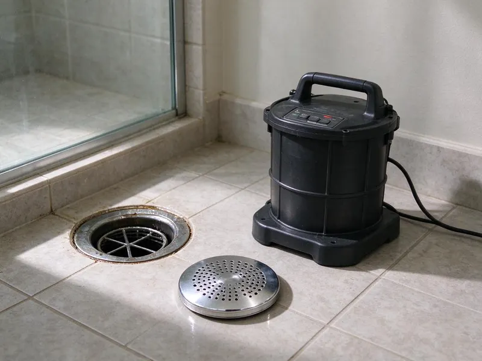

Drain Cleaning in Sherman, TX
For reliable drain cleaning across Sherman, TX, look no further than DFJ Plumbing. We tackle everything from kitchen sink clogs to main line blockages.
- Fast, Same-Day Service
- Clear Pricing, No Surprises
- Licensed, Insured Plumbers
- Satisfaction Guaranteed
Need Expert Drain Cleaning in Sherman, TX?
Our team is ready to tackle any drain issue, big or small, with advanced tools and techniques.
Your Local Experts for Drain Cleaning in Sherman, TX
DFJ Plumbing offers comprehensive drain cleaning services for homes and businesses across Sherman. We use modern diagnostic tools like camera inspections to pinpoint the exact location and cause of your clog, ensuring a precise and lasting solution.
Our expertise includes:
- Advanced drain camera inspections
- Hydro jetting for tough blockages
- Residential and commercial service

Additional Drain Services Services in Sherman, TX
From stubborn kitchen clogs to main sewer backups, our drain services in Sherman, TX clear the line and keep it clear with camera-verified results.


Customers
Why Choose DFJ Plumbing for Drain Cleaning in Sherman, TX?
Our commitment to quality service means we don't just clear the clog; we investigate its cause to prevent repeat problems. We use only proven methods and high-grade equipment for every job.
- Local Expertise, Our team understands the unique plumbing challenges in Sherman, including soil movement and hard water effects on pipes.
- Advanced Tools, We utilize state-of-the-art equipment like high-pressure hydro jetters and sewer cameras for precise diagnostics and effective clearing.
- Lasting Solutions, We aim to solve your drain problems permanently, not just offer a temporary fix, saving you time and money in the long run.
Citywide Coverage
DFJ Plumbing provides extensive drain cleaning coverage to every neighborhood in Sherman. Whether you're in the historic district or a new development, our technicians are ready to respond quickly.
Experienced Team
Our team consists of highly trained and experienced plumbers who specialize in drain cleaning. They are familiar with the common causes of clogs in Texas homes, from grease buildup in kitchens to tree roots impacting sewer lines.
Safety-First Approach
From proper equipment handling to careful waste disposal, our drain cleaning services prioritize the safety of your property and our technicians. We leave your home clean and your drains flowing freely.
Trusted Certified Sherman Plumbing Services Professionals
At DFJ Plumbing, we take pride in providing certified plumbing services throughout Sherman, TX. Backed by leading industry credentials, our experienced plumbers combine technical skill with genuine customer care. Whether it is repair, installation, or maintenance, we follow strict safety and quality standards to deliver lasting results you can trust.
Call Us Now PHCC Plumbing Contractor Recognition
PHCC Plumbing Contractor Recognition Better Business Bureau (BBB) Accreditation
Better Business Bureau (BBB) Accreditation Angi Certified Pro
Angi Certified Pro ISO 9001 Quality Management Certification
ISO 9001 Quality Management CertificationReliable Drain Cleaning Services in Sherman, TX
Kitchen Drain Cleaning in Sherman
Kitchen drains frequently clog due to grease, food particles, and soap buildup. We use specialized tools to cut through these common obstructions, restoring full flow. Our methods are safe for all pipe types, including PVC and cast iron, often found in Sherman's diverse housing stock.

Bathroom Drain Cleaning in Sherman, TX
Hair, soap scum, and toothpaste are the main culprits behind bathroom drain blockages. From sinks to showers and tubs, our plumbers are adept at clearing these stubborn clogs without damaging your fixtures. We can also inspect for deeper issues like vent pipe blockages.
Main Line Drain Cleaning in Sherman
A clogged main sewer line affects all your drains. This often indicates a serious problem like tree root intrusion or a collapsed pipe, which is not uncommon with older infrastructure in Sherman. We use advanced camera inspections to locate the issue and then employ powerful augers or hydro jetting to clear it effectively.
Emergency Drain Cleaning in Sherman, TX
When a drain backs up at an inconvenient time, DFJ Plumbing offers emergency drain cleaning services. We understand that a major blockage can't wait, especially with Texas's variable weather. Our rapid response team is available to address urgent issues, preventing potential water damage to your property.
Hydro Jetting for Drains in Sherman
For the toughest clogs and stubborn buildup, hydro jetting is an incredibly effective solution. This method uses high-pressure water streams to scour the inside of your pipes, removing grease, scale, and even tree roots. It's a non-invasive way to thoroughly clean drains and restore them to near-original condition, ideal for pipes affected by Sherman's hard water.
Clogged Toilet Repair in Sherman, TX
A clogged toilet can be more than just an inconvenience; it can be a sign of a larger plumbing issue. Our technicians quickly diagnose whether the problem is localized to the toilet or if it indicates a blockage further down the line. We use specialized augers to clear toilet clogs without damaging the porcelain.
Outdoor & Storm Drain Cleaning in Sherman
Outdoor drains, including storm drains, can become clogged with leaves, dirt, and debris, especially after heavy Texas rains. These blockages can lead to standing water and foundation issues. We clear these critical drains to ensure proper water runoff and protect your property from water damage.

Commercial Drain Cleaning in Sherman, TX
Businesses in Sherman rely on functioning plumbing for their daily operations. We provide commercial drain cleaning services tailored to the specific needs of restaurants, retail stores, and other facilities. Our powerful equipment can handle the larger volume of waste and more complex drain systems typically found in commercial properties.
Drain Cleaning Near Me in Sherman, TX
For residents and businesses in Sherman searching for 'drain cleaning near me,' DFJ Plumbing is your trusted local expert. Our strategically located teams ensure a fast response time, getting to your property quickly to address any drain emergency.
We pride ourselves on being a local company that understands the specific plumbing challenges faced by properties throughout Sherman, TX. When you call us, you're getting a team that knows your area and is committed to providing efficient, reliable service.
DFJ Plumbing at a Glance
- Fully licensed plumbing team covering Sherman, TX
- 24/7 emergency service with same-day scheduling
- Clear written estimates, no hidden fees
- 4.9-star rated by 812+ Texas customers
Sherman Map
Sherman Information
- Population
- 47,473
- Area codes
- 903/469/214
- Service area
- Sherman and communities within 40 miles
- Nearby
- McKinney, Little Elm, Frisco, Allen
Effective drain cleaning is vital for homes in Sherman, TX, where hard water and expansive clay soils can contribute to mineral buildup and shifting pipes, making regular maintenance crucial for preventing major plumbing issues.
Expert Services
Trust our professionals for reliable DFJ Plumbing solutions in Sherman, TX.
Our Specialized Plumbing Services in Sherman, TX
At DFJ Plumbing, we provide a complete range of plumbing services across Sherman, TX. From leak detection to full system installations, our team ensures fast, precise, and affordable service for both residential and commercial properties. Explore our core services below:


How Our Drain Cleaning Process Works in Sherman, TX
Our methodical approach to drain cleaning guarantees a thorough job, from diagnosis to final inspection.
Request a Quote
Contact us at (737) 405-5978 to schedule an appointment or request emergency service. Our friendly dispatchers will gather information about your drain issue and arrange for a plumber to visit.
Diagnosis & Inspection
Our plumber will arrive on time, assess the clogged drain, and may use a camera inspection to accurately locate and identify the cause of the blockage. This helps us choose the most effective cleaning method.
Expert Cleaning
Using appropriate tools like augers, snakes, or hydro jetters, we'll expertly clear the obstruction. We ensure the drain is thoroughly cleaned, not just superficially opened, to prevent immediate recurrence.
Frequently Asked Questions About Drain Cleaning in Sherman
The cost of drain cleaning in Sherman typically ranges from $150 to $500, depending on the severity and location of the clog. More complex issues like main line blockages requiring hydro jetting or camera inspection might cost between $400 and $800. We always provide a clear estimate before starting any work.
Common signs include slow drains, gurgling noises from pipes, foul odors coming from drains, standing water in sinks or showers, and water backing up into other fixtures. If you notice any of these, it's time to call a professional.
Typically, you do not need a permit for routine drain cleaning or unclogging a drain. Permits are generally required for more extensive plumbing work, such as replacing a sewer line or making significant alterations to your plumbing system. We will advise you if any permit is needed for your specific situation.
Most standard drain cleaning jobs, like clearing a kitchen or bathroom sink, can be completed within 1 to 2 hours. More complex main line blockages or jobs requiring hydro jetting might take 2 to 4 hours, depending on accessibility and severity.
Hydro jetting is generally safe for most modern plumbing systems. However, it may not be suitable for severely compromised, corroded, or fragile pipes, which are sometimes found in very old Sherman properties. We always perform a camera inspection first to assess pipe condition and ensure the safest method is used.
Tree roots are attracted to the moisture and nutrients inside sewer lines. In Texas's dry periods, roots will seek out any tiny crack or loose joint in older pipes to access water, then grow and expand, causing significant blockages. This is a common issue for homes with mature trees.
Yes, DFJ Plumbing stands behind our drain cleaning services with a warranty. The specific terms depend on the nature of the clog and the service performed, but we always aim for customer satisfaction and lasting results. We'll discuss warranty details with you upfront.
We utilize professional-grade equipment from industry-leading brands such as RIDGID, Spartan Tool, and Gorlitz. These tools are known for their reliability and effectiveness in tackling all types of drain blockages, ensuring a thorough job every time.
What People Are Saying About Our Plumbing Experts?

Laura S.
I scheduled a water heater replacement, and the team made the process smooth and affordable. The new unit works perfectly, and they cleaned up after completing the job.
Water Heater Replacement · Little Elm, TX
Robert G.
The trenchless sewer replacement saved our front yard. They walked us through the camera inspection footage first so we knew exactly what we were paying for.
Sewer Line Replacement · Sherman, TX
Daniel K.
A pipe burst at 11 pm and they actually answered. The plumber showed up within the hour, shut everything down, and had us back to normal the next morning. Could not ask for more.
Emergency Plumbing · Frisco, TX
Mark T.
When our office needed drain cleaning, DFJ Plumbing provided quick, reliable service. The plumber arrived on time and made sure every drain flowed perfectly before leaving. Very satisfied.
Drain Cleaning · Little Elm, TXJames P.
Our commercial plumbing system had a leak under the sink, and DFJ Plumbing handled it professionally. The plumbers arrived quickly and restored everything without disruption to our customers.
Commercial Plumbing · McKinney, TXSofia M.
Two new toilets installed in one visit, no mess left behind, and the tech even adjusted a faucet he noticed was dripping. Fair pricing and really friendly.
Toilet Installation · Little Elm, TX